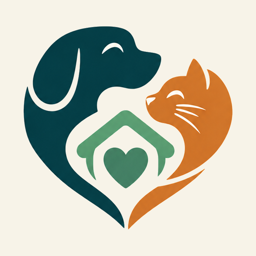
need a paw?Need a Paw? is a two-sided adoption app. Adopters answer a short lifestyle quiz; every listing is then scored against it. Shelters see who is interested and why they would work, and match back. Nobody can message anybody until both sides have said yes.
🐾 Better Connections. Brighter Futures. 💚
The idea
You search, you find a dog, you send an enquiry into a form, and you wait. The shelter gets a pile of enquiries with no way to tell which ones would actually work out, so they answer slowly, and good matches get lost in the noise.
Need a Paw? turns that around. The quiz answers are the product: home type, children, other pets, hours away, activity level, experience and openness to special needs. Every pet carries its own needs, and the two are scored against each other — in both directions.
For adopters
The same account works on the phone and on the web. These are real screens, with demo data.
Each card shows the compatibility score and the reasons behind it. Filters sit along the top: distance, species, and whether to include shelters, rescues or breeders.
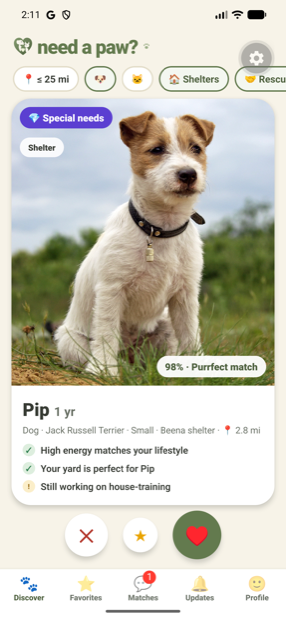
Nothing is phone-only. Someone who starts on a laptop at work and continues on the bus sees the same pets, the same scores and the same saved favourites.
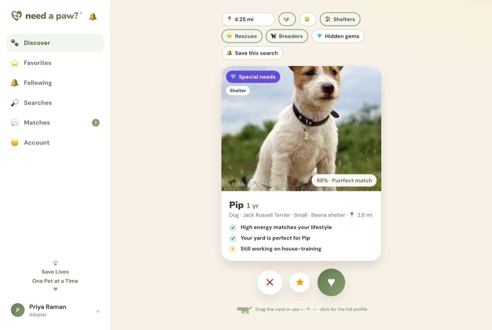
Opening a pet shows why you match and why you might not. A warning that a dog needs more exercise than you have planned is more useful than a photo gallery.
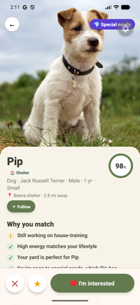
Swiping right sends interest, not a message. The shelter reviews it. Only when they match back does a conversation open — which is why the inbox is short and worth reading.
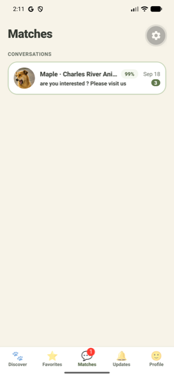
Once matched, messaging is direct. The pet and the compatibility score stay attached to the thread, so neither side has to remember which enquiry this was.
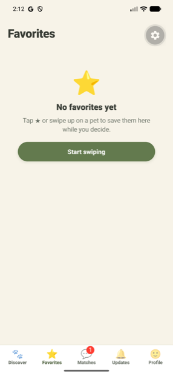
Favourite a pet to come back to it, follow an organisation to hear what they list, or save a search — "small dogs within 25 miles" — and be told when something new answers it.
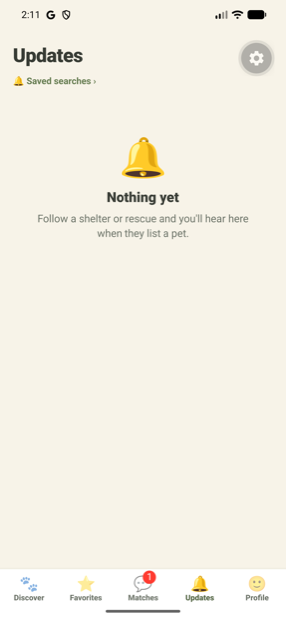
For shelters, rescues and breeders
An organisation account gets its own set of screens. The point is not more enquiries — it is being able to tell, in a few seconds, which ones are worth a reply.
The dashboard counts what matters: pets available, right swipes, inquiries waiting on a decision, and matches. The view chart separates signed-in adopters from passers-by.
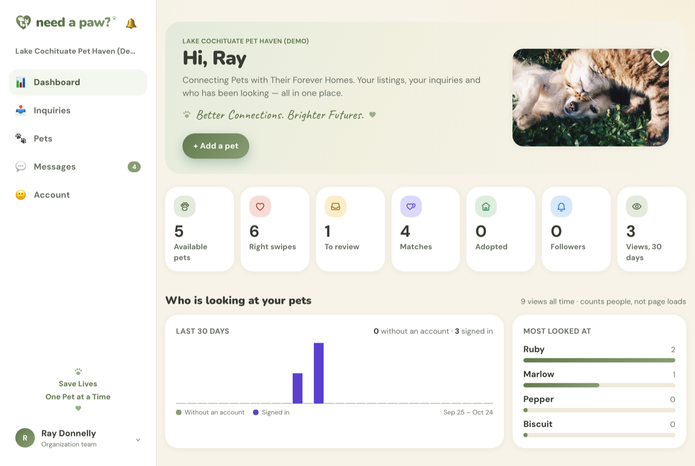
Shelter staff are not at a desk. Everything an organisation can do on the web — review, reply, add a pet, change hours — it can do on the phone.
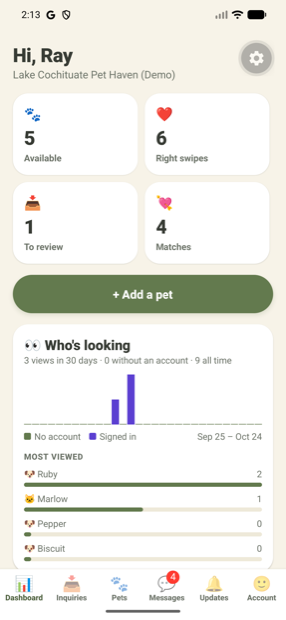
This is the screen the whole product exists for. The adopter's living situation is summarised, the compatibility score is shown, and the mismatches are spelled out plainly — "needs company, and 8+ hours alone is too long". Match back, or decline, in one tap.
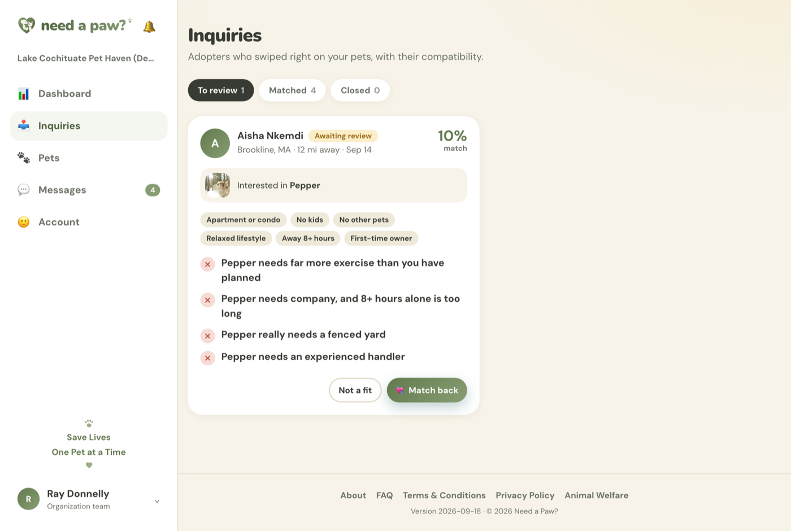
Pets can be drafted before they go live, put on hold, or marked adopted. Each one carries the traits that drive matching, so a listing is an input rather than an advert.
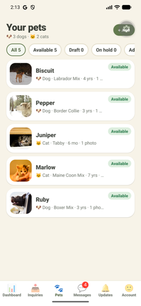
Because conversations only exist after a mutual match, the inbox is not a slush pile. Every thread is someone the organisation has already decided is a plausible home.
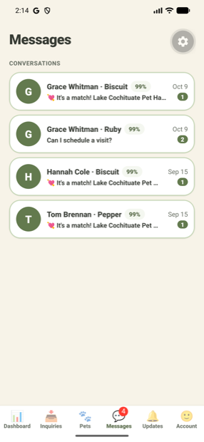
Opening hours, address, licence details for breeders, and the auto-match threshold — the score above which an interested adopter is matched automatically rather than queued.
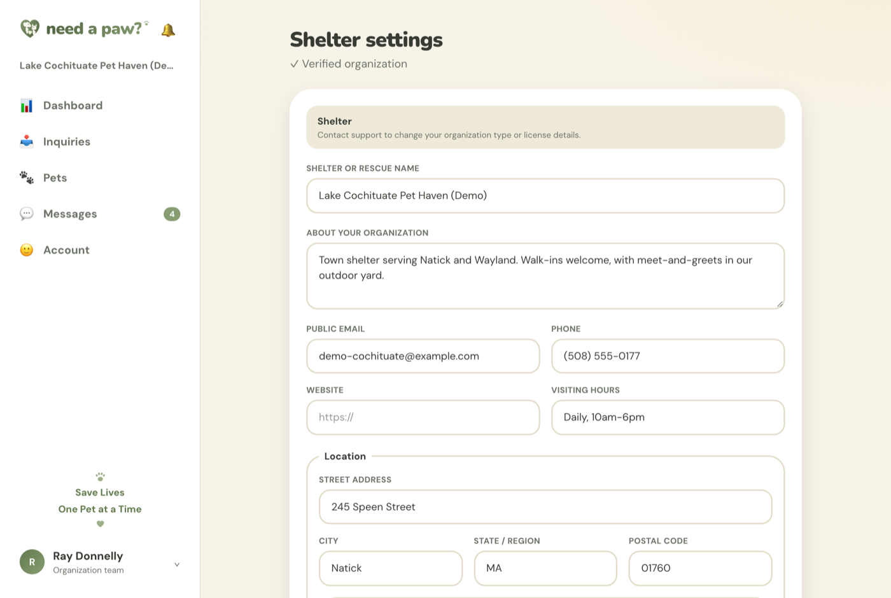
A new shelter, rescue or breeder is reviewed by an administrator before its listings reach adopters, and breeders must supply licence details. Reports from adopters go to the same queue. Every administrative action is written to an audit log nobody can edit.
How a match actually happens
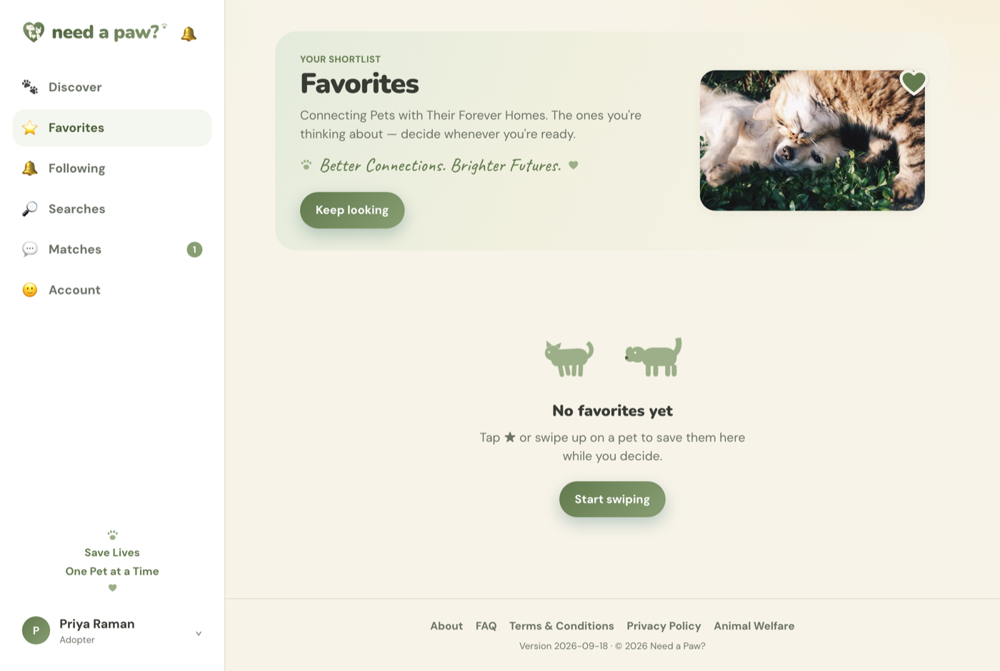
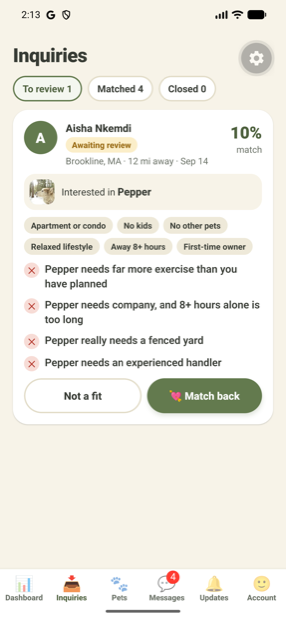
A conversation opens only after that second yes. Organisations can set a threshold so that a strong enough score matches automatically — a shelter that trusts the scoring can let the obvious fits through and spend its attention on the borderline ones.